LVS

文章目录
负载均衡和高可用的简单介绍
1.LB(LoadBalancer)负载均衡,或称为调度器
- 硬件：
- F5 Big-IP
- Citrix(思杰) Netscaler 最常用
- A10
- Array
- Redware
- 软件：
- LVS(4层)：根据套接字来负载均衡。 套接字=IP + 端口
- Nginx(7层) ：更适合http，smtp，pop3，imap的负载均衡
- Haproxy(7层) :根据用户请求的内容来调度。
- 它支持4层和7层的负载均衡，其更适合http，tcp(如：mysql，smtp)
- ats
- perlbal
- LB集群主要以提高并发能力为根本
- LB的功能：
- 监控主服务器的存活情况
- 故障切换时，完成挂载存储，启动服务，抢占VIP
- LB的功能：
2. HA(HighAvailability) 高可用集群
在线时间/(在线时间 + 故障恢复时间)
RHCS,heartbeat,pacemaker,rose(windows),PowerHA(AIX)：目前这些使用都不多了。
主流是：Keepalived,目前官方也非常活跃,更新版本为2.x。
高可用指标：99％, 99.9%, 99.99%, 99.999%
HA集群主要解决提高服务在线时间为根本
3.HPC(High-Performance Computing):高性能计算【HPC集群主要解决大任务计算的问题】
- MapReduce
- 追踪任务完成的状态
- Hadoop
LVS的工作原理:
LVS的两大组件：
用户空间： ipvsadm
内核空间： ipvs
当用户请求被网卡收到，该请求将最先来到PREROUTING链，接着进入INPUT链，当请求进入INPUT链后，ipvs将监听 到这个连接请求，并将该连接请求重定向到自己，接着根据内部调度规则进行匹配，若没有匹配到则将该请求原封不动的转交给INPUT链，最终被INPUT链转发给监听在指定套接字(IP+Port)的应用程序。若匹配调度规则，则ipvs将修改该请求的相关地址(NAT模型：修改VIP-->RIP; DR模型：修改目的MAC为RealSRV的MAC)后，重定向到POSTROUTING链上，最终转发到后端的Real Server上。
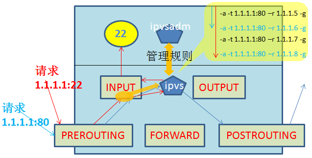
LVS的四种工作模式介绍：
Virtual server via NAT（VS-NAT）
- 优点：集群中的物理服务器可以使用任何支持TCP/IP操作系统，物理服务器可以分配Internet的保留私有地址，只有负载均衡器需要一个合法的IP地址。
- 优点：集群中的物理服务器可以使用任何支持TCP/IP操作系统，物理服务器可以分配Internet的保留私有地址，只有负载均衡器需要一个合法的IP地址。
缺点：扩展性有限。当服务器节点（普通PC服务器）数据增长到20个或更多时,负载均衡器将成为整个系统的瓶颈，因为所有的请求包和应答包都需要经过负载均衡器。假使TCP包的平均长度是536字节的话，平均每个包重新构建,延迟时间大约为60us（在Pentium处理器上计算的，采用更快的处理器将使得这个延迟时间变短），负载均衡器的最大容许能力为8.93M/s，假定每台物理服务器的平台容许能力为400K/s来计算，负载均衡器能为22台物理服务器提供计算。
解决办法：即使是是负载均衡器成为整个系统的瓶颈，如果是这样也有两种方法来解决它。一种是混合处理: 如果采用混合处理的方法，将需要许多同属单一的RR(DNS的资源记录) DNS域。另一种是采用Virtual Server via IP tunneling(即:Tunl模型)或Virtual Server via direct routing(即:DR模型) :若使用此方式可以获得更好的可扩展性；也可以嵌套使用负载均衡器，在最前端的是VS-Tunneling或 VS-DR的负载均衡器，然后后面采用VS-NAT的负载均衡器。
- Virtual server via IP tunneling（VS-TUN）
我们发现，许多Internet服务（例如WEB服务器）的请求包很短小，而应答包通常很大。
1 2 3 |
- 优点：负载均衡器只负责将请求包分发给物理服务器，而物理服务器将应答包直接发给用户。所以，负载均衡器能处理很巨大的请求量，这种方式，一台负载均衡能为超过100台的物理服务器服务，负载均衡器不再是系统的瓶颈。使用VS-TUN方式，如果你的负载均衡器拥有100M的全双工网卡的话，就能使得整个Virtual Server能达到1G的吞吐量。 - 缺点：但是，这种方式需要所有的服务器支持"IP Tunneling"(IP Encapsulation)协议，我仅在Linux系统上实现了这个，目前其它操作系统的支持还在探索之中。 |
Virtual Server via Direct Routing（VS-DR）
- 优点：和VS－TUN一样，负载均衡器也只是分发请求，应答包通过单独的路由方法返回给客户端。与VS-TUN相比，VS-DR这种实现方式不需要隧道结构，因此可以使用大多数操作系统做为物理服务器，其中包括：Linux、Solaris 、FreeBSD 、windows、IRIX 6.5；HPUX11等。
- 缺点：要求负载均衡器的网卡必须与物理网卡在一个物理段上。
LVS-FullNAT
通过同时修改请求报文的源IP地址和目标IP地址进行转发（CIP --> DIP, VIP --> RIP ）此模式在跨机房，跨多个不同网络时,FullNAT模式也可实现调度。因为此时实际是将IP包的源和目标都修改了,就好象调度器直接去访问远端RealServer,远端RealServer只需要按照自己本地路由,找到网关,将包回应给远端调度器，远端调度器再次将回应包，返回给用户。
(1) VIP是公网地址，RIP和DIP是私网地址，且通常不在同一IP网络；因此，RIP的网关一般不会指向DIP
(2) RS收到的请求报文源地址是DIP，因此，只需响应给DIP；但Director还要将其发往Client
(3) 请求和响应报文都经由Director
(4) 支持端口映射
注意：此类型kernel默认不支持
此中使用场景较少,仅阿里云内部的SLB使用此种模式.
对上面三种IP负载均衡技术的优缺点比较:
| 杂项 | VS/NAT | VS/TUN | VS/DR |
|---|---|---|---|
| 服务器操作系统 | 任意 | 支持隧道 | 多数(支持Non-arp ) |
| 服务器网络 | 私有网络 | 局域网/广域网 | 局域网 |
| 服务器数目(100M网络) | 10-20 | 100 | 多(100) |
| 服务器网关 | 负载均衡器 | 自己的路由 | 自己的路由 |
| 效率 | 一般 | 高 | 最高 |
LVS的调度算法介绍：
1.轮叫调度（Round Robin）(简称rr)
不考虑RealServer实际连接数,系统负载,只是轮流给每个RealServer分配请求.
2.加权轮叫（Weighted Round Robin）（简称wrr)
根据实际RealServer的主机配置,将主机配置强的RealServer更大的权重,让调度器分配更多请求给它处理, 同时调度器可自动询问RealServer的负载请求,并动态调整其权重值.
3.最少链接（Least Connections）(LC) :
将新的链接请求分配到当前链接数最小的服务器上. 调度器需要记录每个Server已经建立链接的数目,当调度器给A调度一个请求,则将A的总链接数+1,当链接中止/超时,则总链接-1。
缺陷：
1 2 3 |
- Server性能相同：可平滑分发负载，但不能将长链接的请求发向同一Server.
- Server性能不同：该算法并不理会。 |
因为TCP连接处理请求后会进入TIME_WAIT状态,TCP的TIME_WAIT一般为2分钟,此时连接还占用服务器的资源,所以会出现这样情形,性能高的服务器已处理所收到的连接,连接处于TIME_WAIT状态,而性能低的服务器已经忙于处理所收到的连接,还不断地收到新的连接请求。
4.加权最少链接（Weighted Least Connections）(WLC)
在集群系统中的服务器性能差异较大的情况下，调度器采用“加权最少链接”调度算法优化负载均衡性能，具有较高权值的服务器将承受较大比例的活动连接负载。调度器可以自动问询真实服务器的负载情况，并动态地调整其权值。
5.目标地址散列（Destination Hashing）(DH)
“目标地址散列”调度算法根据请求的目标IP地址，作为散列键（Hash Key）从静态分配的散列表找出对应的服务器，若该服务器是可用的且未超载，将请求发送到该服务器，否则返回空。
补充：目标地址散列调度(Destination Hashing Scheduling)算法,是针对目标IP地址的负载均衡,它是一种静态映射算法, 通过一个散列函数将一个目标IP地址映射为一台服务器。目标地址散列算法会先根据请求的目标IP,计算散列哈希(hash key),从静态分配的散列表找出对应的服务器, 若该服务器是可用且未超载，则将请求发给该服务器，否则返回空,重新调度。
哈希散列表可理解如下：
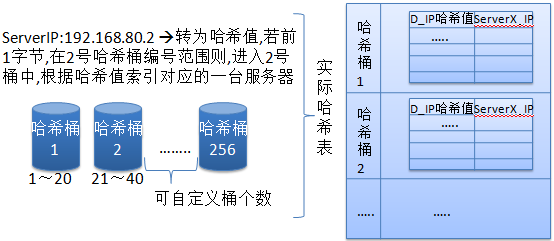
在此算法中,默认它使用256个哈希桶来将目标IP的哈希值前1个字节划分,平均分成256份，每一份就是一个范围,这样我只要计算出目标IP的哈希值,马上就能确定它应该在那个桶中,然后定位到该桶，这样在做小范围表扫描，速度就非常快。另外还需要注意：在此算法中它类似于一致性哈希算法，它会事先将所有可用服务器均匀循环分布到每个桶中，更简单理解就是本来就是一张有256条记录的大表, 该表中事先将所有可用服务器全部顺序循环插入到每一行记录中,然后将这张大表拆分成多个小表,并按前面的方法,将一个范围值作为进入该小表的条件，这样就可以最大限度均匀每一台服务器的负载。
6.源地址散列（Source Hashing）(SH)
“源地址散列”调度算法根据请求的源IP地址，作为散列键（Hash Key）从静态分配的散列表找出对应的服务器,若该服务器是可用的且未超载，将请求发送到该服务器，否则返回空。
7.基于局部性的最少链接（Locality-Based Least Connections）(LBLC)
“基于局部性的最少链接”调度算法是针对目标IP地址的负载均衡，目前主要用于Cache集群系统。该算法根据请求的目标IP地址找出该目标IP地址最近使用的服务器，若该服务器是可用的且没有超载，将请求发送到该服务器；若服务器不存在，或者该服务器超载且有服务器处于一半的工作负载，则用“最少链接” 的原则选出一个可用的服务器，将请求发送到该服务器。
8.带复制的基于局部性最少链接（Locality-Based Least Connections with Replication）(LBLCR)
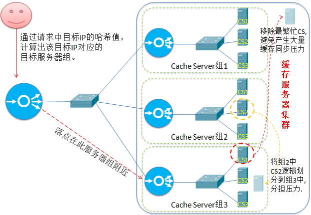
“带复制的基于局部性最少链接”调度算法也是针对目标IP地址的负载均衡，目前主要用于Cache集群系统。 它与LBLC算法的不同之处是它要维护从一个目标 IP地址到一组服务器的映射，而LBLC算法维护从一个目标IP地址到一台服务器的映射。该算法根据请求的目标IP地址找出该目标IP地址对应的服务器组，按“最小连接”原则从服务器组中选出一台服务器，若服务器没有超载，将请求发送到该服务器；
若所选服务器超载（超负载的标准是:该服务器正在处理的连接总数 > 其权重值的2倍），则按“最小连接”原则从这个集群中选出一台服务器，将该服务器加入到服务器组中，将请求发送到该服务器。同时，当该所选服务器组有一段时间没有被修改过,则所选服务器加入新缓存复制组后,很可能导致复制流量大量增加，因此将最忙的服务器从服务器组中删除，以降低复制流量的程度。
9.最短的期望的延迟（Shortest Expected Delay Scheduling SED）(SED)
基于wlc算法。这个必须举例来说了
ABC三台机器分别权重1，2，3 ，连接数也分别是1，2，3。那么如果使用WLC算法的话一个新请求进入时 它可能会分给ABC中的任意一个，使用sed算法后会进行这样一个运算
A：(1+1)/1 = 2
B：(1+2)/2 = 1.5
C：(1+3)/3 = 1.3334
根据运算结果，把连接交给C，因为C的处理延时最小 。
10.最少队列调度（Never Queue Scheduling NQ）(NQ)
无需队列。如果有台 realserver的连接数＝0就直接分配过去，不需要在进行sed运算。
下面对三种模式做示例配置说明:
1.LVS-NAT模型：
简单的来说，LVS的NAT模型如下图：
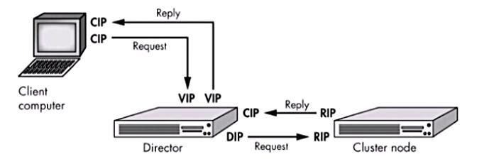
本质是多目标IP的DNAT，通过将请求报文中的目标地址和目标端口修改为通过调度算法挑出的RS的RIP和PORT实现转发。
LVS-NAT模型:
（1）RealServer和调度器应在同一个IP网络，且应使用私网地址；RealServer的网关要指向调度器的IP
（2）调度器(Director)是RealServer的网关, 因此请求和响应报文都将由调度器转发,因此调度器容易成为系统瓶颈.
（3）支持端口映射，可修改请求报文的目标PORT
（4）LVS必须是Linux系统，RS可以是任意OS系统
上面拓扑图的配置如下:
1 2 3 4 5 6 7 8 9 10 11 12 13 14 15 16 17 18 |
Cip:192.168.161.226/24 GW:公网网关 Vip:192.168.161.184/24 GW:公网网关 Dip:192.168.153.136/24 GW:没设 Rip1:192.168.153.137/24 GW:Dip Rip2:192.168.153.138/24 GW:Dip Director LVS: [root@director ~]# systemctl stop firewalld [root@director ~]# echo "net.ipv4.ip_forward = 1" >> /etc/sysctl.conf [root@director ~]# sysctl -p net.ipv4.ip_forward = 1 [root@director ~]# yum install -y ipvsadm [root@director ~]# ipvsadm -A -t 192.168.161.184:80 -s wrr [root@director ~]# ipvsadm -a -t 192.168.161.184:80 -r 192.168.153.137:80 -m -w 5 [root@director ~]# ipvsadm -a -t 192.168.161.184:80 -r 192.168.153.138:80 -m -w 4 [root@director ~]# ipvsadm -a -t 192.168.161.184:80 -r 192.168.153.137:800 -m -w 3 [root@director ~]# ipvsadm -a -t 192.168.161.184:80 -r 192.168.153.138:800 -m -w 2 [root@director ~]# ipvsadm -a -t 192.168.161.184:80 -r 192.168.153.137:8080 -m [root@director ~]# ipvsadm -a -t 192.168.161.184:80 -r 192.168.153.138:8080 -m |
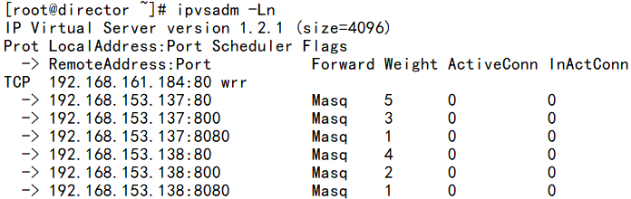
三台RealServer上只需配置IP把DIP设置成RS的网关,并安装nginx软件，然后启动即可.
1 2 3 |
firewall-cmd --add-port=80/tcp --permanent; firewall-cmd --reload firewall-cmd --add-port=800/tcp --permanent; firewall-cmd --reload firewall-cmd --add-port=8080/tcp --permanent; firewall-cmd --reload |
在任意一台上查看nginx的日志:
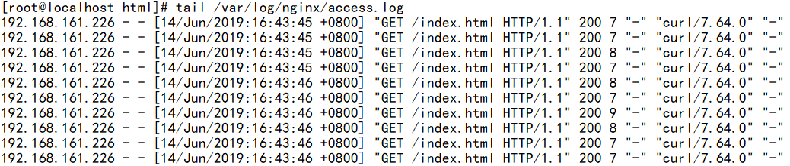
可以看到CIP是ISP上的IP,即客户端的默认网关外网接口的IP.
验证:
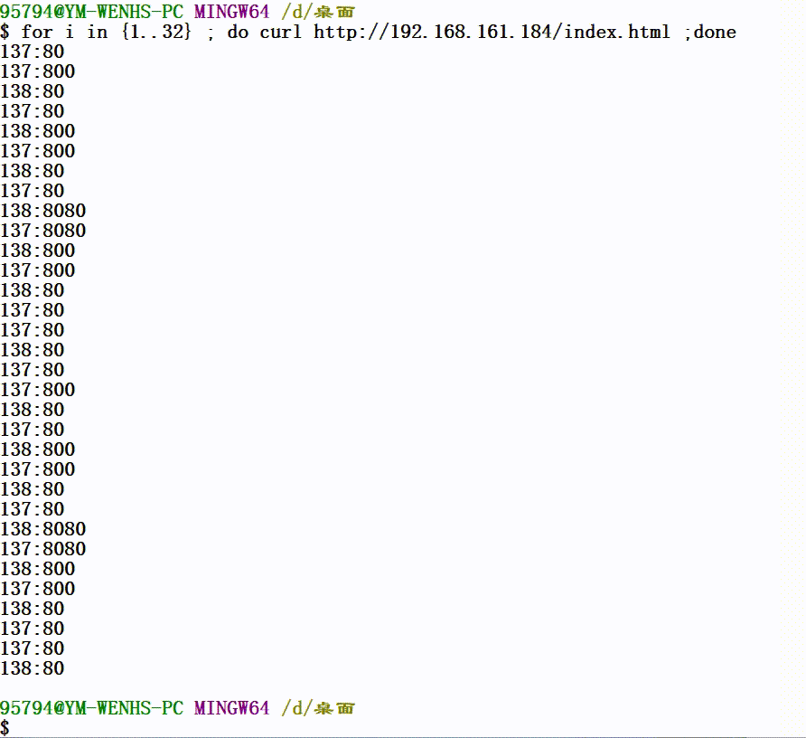
2.LVS-DR模型
实验拓扑说明：这个拓扑中必须有一个独立的网关，因为用户请求发来时，GW将请求发给VIP，而VIP只有调度器会响应，GW将请求发给调度器，【注意：调度器的VIP,尽量使用32位掩码，这非必须】，在DR模式下，调度器上与GW连接的接口上有两个IP，一个是VIP(Virtual IP)，一个是DIP(Director IP)； 当调度器收到来自GW的包后,发现目标是VIP,并且访问的服务与自身定义的虚拟服务一样，接着调度器将数据包中的源MAC修改为自己的MAC，而目的MAC的修改是 根据调度算法，选择一台Real Server后，将该Real Server的MAC填写在目的MAC上，接着将包发给后端服务器，如此例为Real Server 1，RIP1收到后将解包发现其IP是本地loopback的接口IP，因此RIP1继续解包，最终将包送给上层服务，如本例是Web服务；Web开始进行响应，最终封包时，将源MAC写为自己，目的MAC写为GW，源IP写VIP，目的IP写Client IP，并发给GW出去响应。
（1）DIP, RIP 和 VIP : 可在同一网段，也可不在同一网段 ，但他们必须在同一个交换网络。
（2）Director(调度器)和RealServer他们的网关都必须指向真实网关(Firewall)，并且都要配置VIP.
（3）Director可以响应ARP查询VIP的MAC，但RealServer一律都不回应查询VIP的ARP请求.
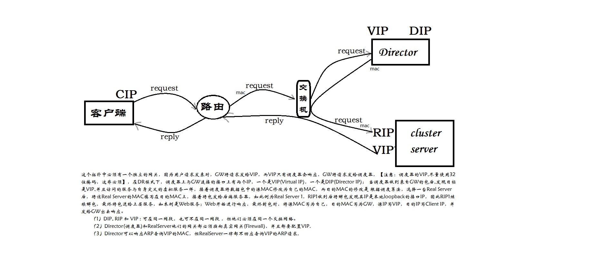
以上拓扑图的配置如下:
1 2 3 4 5 6 7 8 9 10 11 12 13 14 15 16 17 18 19 20 21 22 23 24 25 26 27 28 29 30 31 32 33 34 35 36 37 38 39 40 41 42 43 44 45 46 47 48 49 50 51 52 53 54 55 56 57 58 59 60 61 62 63 64 65 66 67 68 |
Cip:192.168.161.12/24 GW:公网网关(这里设的内网网关)
Vip:192.168.161.184/24 GW:公网网关(这里设的内网网关)
Dip:10.203.0.11/24 GW:内网网关
Rip1:10.203.0.12/24 GW:内网网关 网页内容:137:80
Rip2:10.203.0.12/24 GW:内网网关 网页内容:138:80
此时,内网在同一网段,不用网关即可互通
Director LVS:
[root@director ~]# systemctl stop firewalld
[root@director ~]# echo "net.ipv4.ip_forward = 1" >> /etc/sysctl.conf
[root@director ~]# sysctl -p
net.ipv4.ip_forward = 1
[root@director ~]# nmtui设置ens32自动获取ip ,并添加一个子接口192168.161.184
[root@director ~]# ip a show ens32
2: ens32: <BROADCAST,MULTICAST,UP,LOWER_UP> mtu 1500 qdisc pfifo_fast state UP group default qlen 1000
link/ether 00:0c:29:68:ea:96 brd ff:ff:ff:ff:ff:ff
inet 10.203.0.11/21 brd 10.203.7.255 scope global noprefixroute dynamic ens32
valid_lft 5898sec preferred_lft 5898sec
inet 192.168.161.184/24 brd 192.168.161.255 scope global noprefixroute ens32
valid_lft forever preferred_lft forever
inet6 fe80::20c:29ff:fe68:ea96/64 scope link
valid_lft forever preferred_lft forever
[root@director ~]# route -n
Kernel IP routing table
Destination Gateway Genmask Flags Metric Ref Use Iface
0.0.0.0 10.203.7.254 0.0.0.0 UG 100 0 0 ens32
10.203.0.0 0.0.0.0 255.255.248.0 U 100 0 0 ens32
192.168.161.0 0.0.0.0 255.255.255.0 U 100 0 0 ens32
[root@director ~]# yum install -y ipvsadm
[root@director ~]# ipvsadm -A -t 192.168.161.184:80 -s wrr
[root@director ~]# ipvsadm -a -t 192.168.161.184:80 -r 10.203.0.12:80 -g -w 3
[root@director ~]# ipvsadm -a -t 192.168.161.184:80 -r 10.203.0.13:80 -g -w 2
[root@director ~]# ipvsadm -ln
IP Virtual Server version 1.2.1 (size=4096)
Prot LocalAddress:Port Scheduler Flags
-> RemoteAddress:Port Forward Weight ActiveConn InActConn
TCP 192.168.161.184:80 wrr
-> 10.203.0.12:80 Route 3 90 0
-> 10.203.0.13:80 Route 2 60 0
RSs(都做这个操作):
[root@realserver1 ~]# echo "net.ipv4.conf.all.arp_ignore = 1" >> /etc/sysctl.conf
[root@realserver1 ~]# echo "net.ipv4.conf.all.arp_announce = 2" >> /etc/sysctl.conf
[root@realserver1 ~]# echo "net.ipv4.conf.lo.arp_ignore = 1" >> /etc/sysctl.conf
[root@realserver1 ~]# echo "net.ipv4.conf.lo.arp_announce = 2" >> /etc/sysctl.conf
[root@realserver1 ~]# sysctl -p
net.ipv4.conf.all.arp_ignore = 1
net.ipv4.conf.all.arp_announce = 2
net.ipv4.conf.lo.arp_ignore = 1
net.ipv4.conf.lo.arp_announce = 2
[root@realserver1 ~]# firewall-cmd --add-port=80/tcp --permanent; firewall-cmd --reload
[root@realserver1 ~]# nmtui设置ens32自动获取ip ,并添加一个子接口192168.161.184
[root@realserver1 ~]# ip a show ens32
2: ens32: <BROADCAST,MULTICAST,UP,LOWER_UP> mtu 1500 qdisc pfifo_fast state UP group default qlen 1000
link/ether 00:0c:29:60:75:ab brd ff:ff:ff:ff:ff:ff
inet 10.203.0.12/21 brd 10.203.7.255 scope global noprefixroute dynamic ens32
valid_lft 7002sec preferred_lft 7002sec
inet 192.168.161.184/24 brd 192.168.161.255 scope global noprefixroute ens32
valid_lft forever preferred_lft forever
inet6 fe80::20c:29ff:fe60:75ab/64 scope link
valid_lft forever preferred_lft forever
[root@realserver1 ~]# route -n
Kernel IP routing table
Destination Gateway Genmask Flags Metric Ref Use Iface
0.0.0.0 10.203.7.254 0.0.0.0 UG 100 0 0 ens32
10.203.0.0 0.0.0.0 255.255.248.0 U 100 0 0 ens32
192.168.161.0 0.0.0.0 255.255.255.0 U 100 0 0 ens32
然后配置nginx,测试验证 |
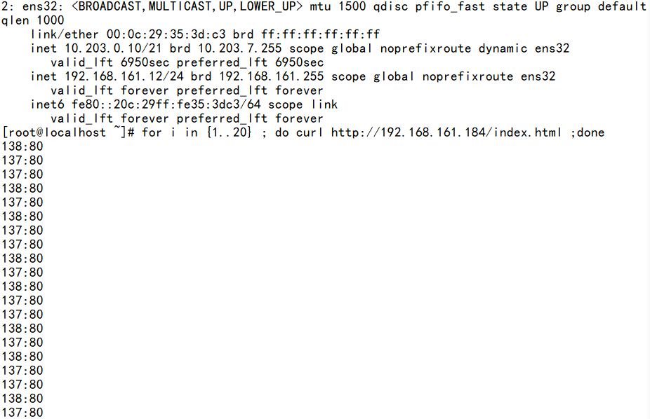
3.LVS Tunnel模式
拓扑：
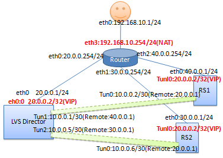
LVS Tunnel模式配置要点：
(1) LVS调度节点、RealServer节点、VIP都必须是公网IP
(2) LVS调度节点、RealServer节点都必须配置VIP
(3) 调度节点 与 RS间必须打通一条隧道
(4) 客户端请求发往调度节点，调度节点通过隧道将请求报文封装起来发给RS, RS在隧道另一端去掉GRE封装,发现是去往VIP的,随即转给tunl0处理,最终Tunl0 将响应报文从RS的默认路由发出。
(5) 调度节点要在所有设备上启用 只接收网关发送的ICMP的重定向报文。
(6) 调度节点 和 RS上都必须关闭路由转发(ip_forward), RS上关闭ARP响应和返回路径过滤 (即:源是A口,要从B口出,B口不丢该包).
LVS Tunnel环境搭建
(1) 路由器模拟:
1 2 3 4 5 6 7 8 9 10 11 |
echo 1 > /proc/sys/net/ipv4/ip_forward ifconfig eth0 20.0.0.254/24 up ifconfig eth1 30.0.0.254/24 up ifconfig eth2 40.0.0.254/24 up ifconfig eth3 192.168.10.254/24 up iptables -t nat -A POSTROUTING -s 192.168.10.0/24 ! -d 192.168.10.0/24 -j SNAT --to 192.168.10.254 |
(2) LVS调度节点
关闭路由转发（默认是关闭.）
1
|
echo 0 > /proc/sys/net/ipv4/ip_forward |
在所有接口、默认接口、eth0上都打开 仅接收来自网关的ICMP重定向.
注：默认应该是打开的,从抓包和分析上看,ICMP重定向是必须,因为客户端访问的调度器的子接口,
而调度器的主接口IP是20.0.0.1,子(次)接口IP20.0.0.2,网关通过ARP发现,客户端访问的VIP20.0.0.2
是在调度器接口上，因此,将去往20.0.0.2的请求重定向给调度器。
1 2 3 4 5 |
echo 1 > /proc/sys/net/ipv4/conf/all/send_redirects echo 1 > /proc/sys/net/ipv4/conf/default/send_redirects echo 1 > /proc/sys/net/ipv4/conf/eth0/send_redirects |
先关闭所有接口,用到那个激活那个。
1 2 3 4 5 6 7 8 9 10 11 12 13 |
service network stop ifconfig eth0 20.0.0.1/24 up ifconfig eth0:0 20.0.0.2 broadcast 20.0.0.2 netmask 255.255.255.255 up ip tunnel add tun1 mode gre remote 30.0.0.1 local 20.0.0.1 ifconfig tun1 10.0.0.1/30 up ip tunnel add tun2 mode gre remote 40.0.0.1 local 20.0.0.1 ifconfig tun2 10.0.0.5/30 up |
#注：
GRE(通用路由封装) ： https://blog.csdn.net/taozpwater/article/details/9774123
简单理解: GRE就是在将原始IP包,再次封装在GRE内部, 接着在再次将GRE包封装到新IP包中,然后在加入如链路层帧头,最后发出去.其实GRE,VxLAN,NVGRE,IPSec都可认为是一种VPN.
MAC帧[IP头[GRE头【IP头[TCP头[应用协议数据]]】]]
注意：
GRE封装后,若后端是调度器,则该调度器将永远只能看到一个IP来访问自己,因此要注意使用调度算法.
添加默认路由
1
|
route add default gw 20.0.0.254 |
添加主机路由,以便Linux收到去往20.0.0.2的报文后,知道转到那个接口上。
1 2 3 4 5 6 7 |
route add -host 20.0.0.2 dev eth0:0 yum install ipvsadm ipvsadm -A -t 20.0.0.2:80 -s rr ipvsadm -a -t 20.0.0.2:80 -r 10.0.0.2 -i |
注意:这里必须使用tunnel模式,即“-i”
ipvsadm -a -t 20.0.0.2:80 -r 10.0.0.6 -i
(2) RealServer1的配置:
1 2 3 |
ifconfig eth0 30.0.0.1/24 up ifconfig tunl0 20.0.0.2 broadcast 20.0.0.2 netmask 255.255.255.255 up |
注意：一定要添加一条主机路由,否则Linux的tun0接口收到GRE封包后,
解开发现是一个去往20.0.0.2的IP报文,查本机转发表若没有找到,就可能丢弃该报文.
那么客户端可能就打不开网页了。
1 2 3 4 5 |
route add -host 20.0.0.2 dev tunl0 ip tunnel add tun0 mode gre remote 20.0.0.1 local 30.0.0.1 ifconfig tun0 10.0.0.2/30 up |
关闭路由转发
1
|
echo 0 > /proc/sys/net/ipv4/ip_forward |
#arp_ignore: 定义接收到ARP请求时的响应级别；
# 0：只要本地配置的有相应地址，就给予响应；
# 1：仅响应目的IP配置在此接口上的ARP广播请求
#arp_announce: 定义将自己的地址向外通告时的通告级别(此行为仅发生在网络设备刚接入网络时)
# 0：将本地任何接口上的任何地址向外通告；
# 1：试图仅向目标网络通告与其网络匹配的地址；
# 2：仅向与本地接口上地址匹配的网络进行通告；
1 2 3 4 5 6 7 |
echo 1 > /proc/sys/net/ipv4/conf/tunl0/arp_ignore echo 2 > /proc/sys/net/ipv4/conf/tunl0/arp_announce echo 1 > /proc/sys/net/ipv4/conf/all/arp_ignore echo 2 > /proc/sys/net/ipv4/conf/all/arp_announce |
关闭tunl0、eth0上返回路径过滤
1 2 3 4 5 |
echo 0 > /proc/sys/net/ipv4/conf/tunl0/rp_filter echo 0 > /proc/sys/net/ipv4/conf/eth0/rp_filter echo 0 > /proc/sys/net/ipv4/conf/all/rp_filter |
(2) RealServer2的配置:
1 2 3 |
ifconfig eth0 40.0.0.1/24 up ifconfig tunl0 20.0.0.2 broadcast 20.0.0.2 netmask 255.255.255.255 up |
注意：一定要添加一条主机路由,否则Linux的tun0接口收到GRE封包后,
解开发现是一个去往20.0.0.2的IP报文,查本机转发表若没有找到,就可能丢弃该报文.
那么客户端可能就打不开网页了。
1 2 3 4 5 |
route add -host 20.0.0.2 dev tunl0 ip tunnel add tun0 mode gre remote 20.0.0.1 local 40.0.0.1 ifconfig tun0 10.0.0.6/30 up |
关闭路由转发
1 2 3 4 5 6 7 8 9 |
echo 0 > /proc/sys/net/ipv4/ip_forward echo 1 > /proc/sys/net/ipv4/conf/tunl0/arp_ignore echo 2 > /proc/sys/net/ipv4/conf/tunl0/arp_announce echo 1 > /proc/sys/net/ipv4/conf/all/arp_ignore echo 2 > /proc/sys/net/ipv4/conf/all/arp_announce |
关闭tunl0、eth0上返回路径过滤
1 2 3 4 5 |
echo 0 > /proc/sys/net/ipv4/conf/tunl0/rp_filter echo 0 > /proc/sys/net/ipv4/conf/eth0/rp_filter echo 0 > /proc/sys/net/ipv4/conf/all/rp_filter |
LVS调度器收到来客户端的访问报文：
先重定向
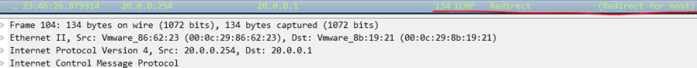
调度后发送的报文，注意每个IP报文内部的内容,在该IP报文看来都仅仅是数据而已。
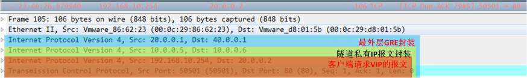
RealServer2收到GRE报文解封装后，将该报文发给tun0接口后：
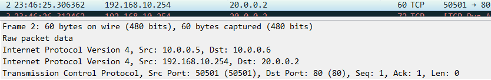
RealServer2的tun0接口去掉IP层后，发现还是IP报文,随机转发给tunl0接口:
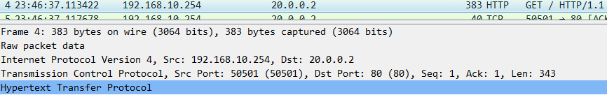
回应
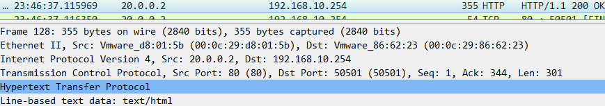